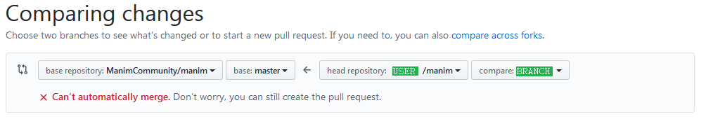

Manim Development Process#
For first-time contributors#
Install git:
For instructions see https://git-scm.com/.
Fork the project. Go to https://github.com/ManimCommunity/manim and click the “fork” button to create a copy of the project for you to work on. You will need a GitHub account. This will allow you to make a “Pull Request” (PR) to the ManimCommunity repo later on.
Clone your fork to your local computer:
git clone https://github.com/<your-username>/manim.git
GitHub will provide both a SSH (
git@github.com:<your-username>/manim.git) and HTTPS (https://github.com/<your-username>/manim.git) URL for cloning. You can use SSH if you have SSH keys setup.警告
Do not clone the ManimCommunity repository. You must clone your own fork.
Change the directory to enter the project folder:
cd manimAdd the upstream repository, ManimCommunity:
git remote add upstream https://github.com/ManimCommunity/manim.git
Now,
git remote -vshould show two remote repositories named:origin, your forked repositoryupstreamthe ManimCommunity repository
Install Manim:
Follow the steps in our installation instructions to install Manim’s dependencies, primarily
ffmpegandLaTeX.We recommend using Poetry to manage your developer installation of Manim. Poetry is a tool for dependency management and packaging in Python. It allows you to declare the libraries your project depends on, and it will manage (install / update) them for you. In addition, Poetry provides a simple interface for managing virtual environments.
If you choose to use Poetry as well, follow Poetry’s installation guidelines to install it on your system, then run
poetry installfrom your cloned repository. Poetry will then install Manim, as well as create and enter a virtual environment. You can always re-enter that environment by runningpoetry shell.In case you want to install extra dependencies that are defined in the
[tool.poetry.extras]section ofpyproject.toml, this can be done by passing the-Eflag, for examplepoetry install -E jupyterlab -E gui.In case you decided against Poetry, you can install Manim via pip by running
python3 -m pip install .. Note that due to our development infrastructure being based on Poetry, we currently do not support editable installs viapip, so you will have to re-run this command every time you make changes to the source code.
注解
The following steps assume that you chose to install and work with Poetry.
Install Pre-Commit:
poetry run pre-commit install
This will ensure during development that each of your commits is properly formatted against our linter and formatters,
black,flake8,isortandcodespell.
You are now ready to work on manim!
Develop your contribution#
Checkout your local repository’s main branch and pull the latest changes from ManimCommunity,
upstream, into your local repository:git checkout main git pull --rebase upstream main
Create a branch for the changes you want to work on rather than working off of your local main branch:
git checkout -b <new branch name> upstream/main
This ensures you can easily update your local repository’s main with the first step and switch branches to work on multiple features.
Write some awesome code!
You’re ready to make changes in your local repository’s branch. You can add local files you’ve changed within the current directory with
git add ., or add specific files withgit add <file/directory>
and commit these changes to your local history with
git commit. If you have installed pre-commit, your commit will succeed only if none of the hooks fail.小技巧
When crafting commit messages, it is highly recommended that you adhere to these guidelines.
Add new or update existing tests.
Depending on your changes, you may need to update or add new tests. For new features, it is required that you include tests with your PR. Details of our testing system are explained in the testing guide.
Update docstrings and documentation:
Update the docstrings (the text in triple quotation marks) of any functions or classes you change and include them with any new functions you add. See the documentation guide for more information about how we prefer our code to be documented. The content of the docstrings will be rendered in the reference manual.
小技巧
Use the
manim directive for Sphinxto add examples to the documentation!A directive for including Manim videos in a Sphinx document
As far as development on your local machine goes, these are the main steps you should follow.
Polishing Changes and Submitting a Pull Request#
As soon as you are ready to share your local changes with the community so that they can be discussed, go through the following steps to open a pull request. A pull request signifies to the ManimCommunity organization, “Here are some changes I wrote; I think it’s worthwhile for you to maintain them.”
注解
You do not need to have everything (code/documentation/tests) complete to open a pull request (PR). If the PR is still under development, please mark it as a draft. Community developers will still be able to review the changes, discuss yet-to-be-implemented changes, and offer advice; however, the more complete your PR, the quicker it will be merged.
Update your fork on GitHub to reflect your local changes:
git push -u origin <branch name>
Doing so creates a new branch on your remote fork,
origin, with the contents of your local repository on GitHub. In subsequent pushes, this local branch will track the branchoriginandgit pushis enough.Make a pull request (PR) on GitHub.
In order to make the ManimCommunity development team aware of your changes, you can make a PR to the ManimCommunity repository from your fork.
警告
Make sure to select
ManimCommunity/maniminstead of3b1b/manimas the base repository!Choose the branch from your fork as the head repository - see the screenshot below.
Please make sure you follow the template (this is the default text you are shown when first opening the ‘New Pull Request’ page).
Your changes are eligible to be merged if:
there are no merge conflicts
the tests in our pipeline pass
at least one (two for more complex changes) Community Developer approves the changes
You can check for merge conflicts between the current upstream/main and
your branch by executing git pull upstream main locally. If this
generates any merge conflicts, you need to resolve them and push an
updated version of the branch to your fork of the repository.
Our pipeline consists of a series of different tests that ensure that manim still works as intended and that the code you added sticks to our coding conventions.
Code style: We use the code style imposed by Black, isort and flake8. The GitHub pipeline makes sure that the (Python) files changed in your pull request also adhere to this code style. If this step of the pipeline fails, fix your code formatting automatically by running
black <file or directory>andisort <file or directory>. To fix code style problems, runflake8 <file or directory>for a style report, and then fix the problems manually that were detected byflake8.Tests: The pipeline runs manim’s test suite on different operating systems (the latest versions of Ubuntu, MacOS, and Windows) for different versions of Python. The test suite consists of two different kinds of tests: integration tests and doctests. You can run them locally by executing
poetry run pytestandpoetry run pytest --doctest-modules manim, respectively, from the root directory of your cloned fork.Documentation: We also build a version of the documentation corresponding to your pull request. Make sure not to introduce any Sphinx errors, and have a look at the built HTML files to see whether the formatting of the documentation you added looks as you intended. You can build the documentation locally by running
make htmlfrom thedocsdirectory. Since the inheritance diagrams require you to have Graphviz installed locally.
Finally, if the pipeline passes and you are satisfied with your changes: wait for feedback and iterate over any requested changes. You will likely be asked to edit or modify your PR in one way or another during this process. This is not an indictment of your work, but rather a strong signal that the community wants to merge your changes! Once approved, your changes may be merged!
Further useful guidelines#
When submitting a PR, please mention explicitly if it includes breaking changes.
When submitting a PR, make sure that your proposed changes are as general as possible, and ready to be taken advantage of by all of manim’s users. In particular, leave out any machine-specific configurations, or any personal information it may contain.
If you are a maintainer, please label issues and PRs appropriately and frequently.
When opening a new issue, if there are old issues that are related, add a link to them in your new issue (even if the old ones are closed).
When submitting a code review, it is highly recommended that you adhere to these general guidelines.
If you find stale or inactive issues that seem to be irrelevant, please post a comment saying ‘This issue should be closed’, and a community developer will take a look.
Please do as much as possible to keep issues, PRs, and development in general as tidy as possible.
You can find examples for the docs in several places:
the Example Gallery, Tutorials,
and Reference Classes.
In case you are contributing, please have a look at this flowchart:
Thank you for contributing!